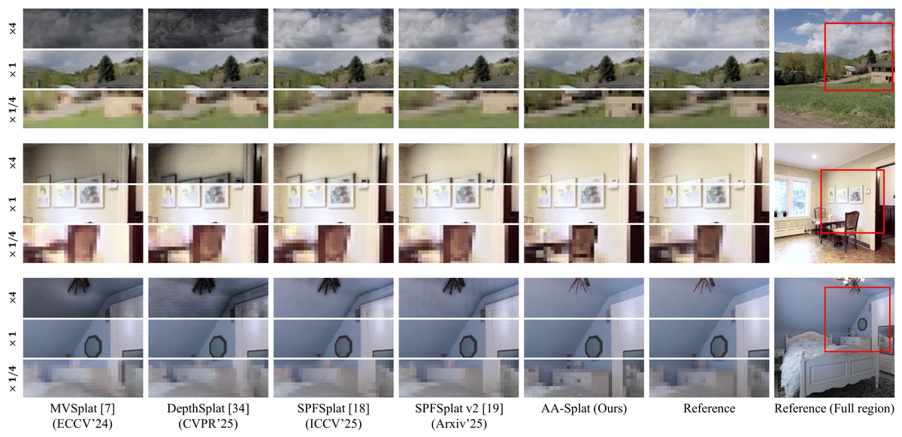
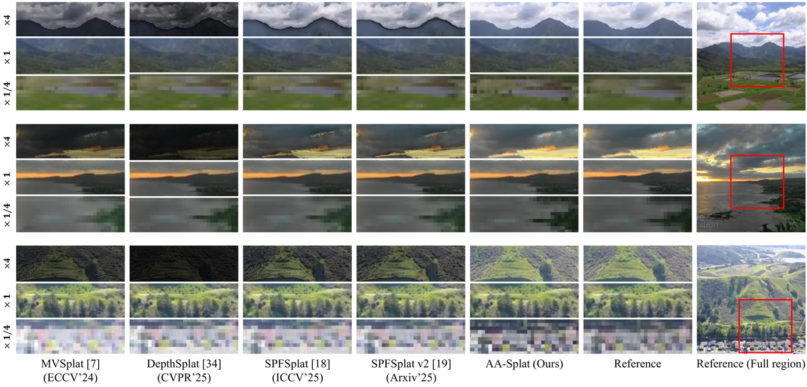
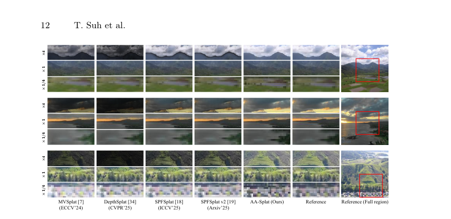
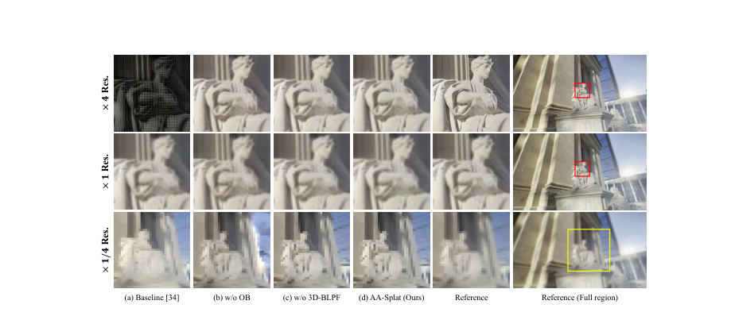
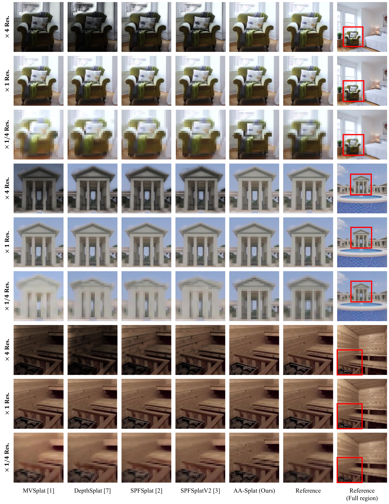
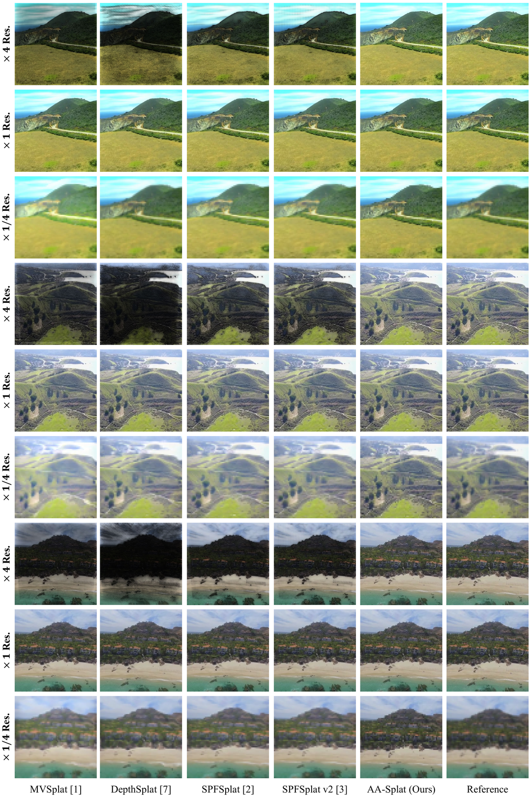

AA-Splat
简单摘要
前馈 3D 高斯分布 (FF-3DGS) 成为稀疏视图 3D 重建和新颖视图合成 (NVS) 的快速、稳健的解决方案。作者的总体方法路径是：然而，现有的 FF-3DGS 方法建立在不正确的屏幕空间膨胀滤波器上，在以分布外采样率渲染时会导致严重的渲染伪影。
另外一个关键点是，我们首先提出了一个 FF-3DGS 模型，称为 AA-Splat，以在任何分辨率下实现强大的抗锯齿渲染。从结果来看，AA-Splat 采用不透明度平衡带限 (OBBL) 设计，该设计结合了两个组件。


多视图图像的 3D 重建和新颖的视图合成 (NVS) 是至关重要的计算机视觉任务，其应用包括虚拟现实和增强现实、机器人技术和自动驾驶。作者的总体方法路径是：3DGS 从根本上来说是一个逆问题，旨在恢复 3D 场景的连续表示。
另外一个关键点是，结果，这些模型回归高度退化（薄）高斯，导致（i）在增加采样率时出现严重的侵蚀伪影，从而打开透明接缝，以及（ii）在降低采样率时出现结构的膨胀伪影。从结果来看，为了克服这些挑战，我们提出了 AA-Splat，这是第一个抗锯齿 FF-3DGS 模型，可以在不同的采样率下实现无锯齿渲染。
核心创新
这篇工作的创新不是简单堆模块，而是把问题重新定义为：前馈 3D 高斯分布 (FF-3DGS) 成为稀疏视图 3D 重建和新颖视图合成 (NVS) 的快速、稳健的解决方案。
另一项关键新意在于：我们首先提出了一个 FF-3DGS 模型，称为 AA-Splat，以在任何分辨率下实现强大的抗锯齿渲染。这使方法不只是能生成结果，更能解释为什么会有效。
进一步看，我们提出的 AA-Splat 将每个高斯基元的最小尺度计算为奈奎斯特采样间隔，有效地限制了重建的 3DGS 表示的频带。这也是它和纯工程拼装方案拉开差距的地方。
技术细节
方法主干可以概括为：给定上下文视图图像（ ，其中 和 是图像大小）及其相应的相机投影矩阵（ ），AA-Splat 旨在预测一组像素对齐的高斯基元，以在采样率急剧变化的情况下最大化渲染质量。其中最关键的环节是：也就是说，我们的目标是抑制放大/缩小、改变相机观看距离或改变相机焦距时引起的渲染伪影。这种设计直接带来的效果是：我们提出的 AA-Splat 将每个高斯基元的最小尺度计算为奈奎斯特采样间隔，有效地限制了重建的 3DGS 表示的频带。从训练与推理角度看，作者还专门处理了：为了弥补这一点，我们采用不透明度混合（OB）技术来确保所有高斯图元无缝集成到渲染过程中。这组公式用于定义模型中的变量关系和训练目标。建议先看左侧要预测的对象，再看右侧每一项如何约束优化方向。该公式用于定义核心计算关系。阅读时先看左侧目标量，再看右侧由 R、t、R、R 等变量构成的约束和聚合方式。该公式用于定义核心计算关系。阅读时先看左侧目标量，再看右侧由 J、J、T 等变量构成的约束和聚合方式。该公式用于定义核心计算关系。阅读时先看左侧目标量，再看右侧由 C、x、i、N 等变量构成的约束和聚合方式。这组公式用于定义模型中的变量关系和训练目标。建议先看左侧要预测的对象，再看右侧每一项如何约束优化方向。该公式用于定义核心计算关系。阅读时先看左侧目标量，再看右侧由 G、j、x、x 等变量构成的约束和聚合方式。该公式用于定义核心计算关系。阅读时先看左侧目标量，再看右侧由 G、j、x、G 等变量构成的约束和聚合方式。
$$ \begin{split} \mathcal{G}_k(\mathbf{x})=\exp\bigg(-\frac{1}{2}(\mathbf{x}-\bm{\upmu}_k)^T\mathbf{\Sigma}_k^{-1}(\mathbf{x}-\bm{\upmu}_k)\bigg) \end{split} $$
$$ \begin{split} \bm{\upmu}_k^\text{cam}=\mathbf{R}\bm{\upmu}_k+\mathbf{t}, \mathbf{\Sigma}_k^\text{cam}=\mathbf{R}\mathbf{\Sigma}_k\mathbf{R}^T \end{split} $$
$$ \begin{split} \mathbf{\Sigma}_k^\text{img}=\mathbf{J}_k\mathbf{\Sigma}_k^\text{cam}\mathbf{J}_k^T \end{split} $$
$$ \begin{split} C(\mathbf{x})=\sum_{i\in\mathcal{N}}\mathbf{c}_i\alpha_i\mathcal{G}_i^\text{2D}(\mathbf{x})\prod_{j=1}^{i-1}(1-\alpha_j\mathcal{G}_j^\text{2D}(\mathbf{x})) \end{split} $$
$$ \hat{\nu}_j = \max\big(\{\mathds{1}^{(i)}(\bm{\upmu}_j) \cdot f^{(i)} / d_j^{(i)}\}_{i=1}^N\big). $$
$$ \mathcal{G}_{j}^\text{low}(\mathbf{x})=\exp{\bigg(-\frac{1}{2}(\mathbf{x}-\bm{\upmu}_j)^T\Big(\frac{\sigma_s}{\hat{\nu}_j}\mathbf{I}\Big)(\mathbf{x}-\bm{\upmu}_j)\bigg)}, $$
$$ \mathcal{G}_{j}^\text{reg}(\mathbf{x})=(\mathcal{G}_{j}\otimes\mathcal{G}_{j}^\text{low})(\mathbf{x}). $$




实验结论
实验主要围绕一个核心问题展开验证：我们通过在 RE10K 上进行训练和评估分布内 RE10K 以及在 DL3DV 和 ACID 数据集上的零样本泛化来评估 AA-Splat 和现有方法。
从主要对比结果来看，然后以多种分辨率渲染和评估目标视图，其中以较高分辨率渲染模拟放大效果，以较低分辨率渲染模拟缩小效果。\\ 指标。定性结果与消融实验进一步表明：这涉及对低分辨率地面实况目标视图图像进行双三次上采样，并将其用作计算 PSNR、SSIM 或 LPIPS 指标的参考。

理解评价
从整篇论文看，它的真正贡献是：然而，现有的 FF-3DGS 方法建立在不正确的屏幕空间膨胀滤波器上，在以分布外采样率渲染时会导致严重的渲染伪影，而不是单纯把扩散模型继续微调。作者把问题落在“分布外驾驶场景如何稳定生成”这个更关键的缺口上。
它最有说服力的地方在于：我们首先提出了一个 FF-3DGS 模型，称为 AA-Splat，以在任何分辨率下实现强大的抗锯齿渲染。这说明论文的方法链路——3D 点云编辑、车辆补全、再到 RL 后训练——是前后闭合的，而不是各模块各自堆叠。
主要局限在于：3D 频带限制后置滤波器将多视图最大频率边界集成到前馈重建管道中，有效地对生成的 3D 场景表示进行频带限制并消除退化高斯分布；。如果继续往前推进，一个自然方向是把更长时序、更低成本训练和更广泛的 OOD 场景覆盖一起纳入统一评估。
从整篇论文看，它的真正贡献是：为了有效地重新生成退化高斯分布，我们建议应用 3D 带限后置滤波器，该滤波器根据奈奎斯特采样率有效地对 3D 高斯基元进行带宽限制，从而消除了退化高斯分布中的高频伪影，而不是单纯把扩散模型继续微调。作者把问题落在“分布外驾驶场景如何稳定生成”这个更关键的缺口上。
它最有说服力的地方在于：两种技术有效地相互补充，不仅产生了有效的抗锯齿解决方案，而且还显着提高了跨域泛化能力。这说明论文的方法链路——3D 点云编辑、车辆补全、再到 RL 后训练——是前后闭合的，而不是各模块各自堆叠。
主要局限在于：为了有效地重新生成退化高斯分布，我们建议应用 3D 带限后置滤波器，该滤波器根据奈奎斯特采样率有效地对 3D 高斯基元进行带宽限制，从而消除了退化高斯分布中的高频伪影。如果继续往前推进，一个自然方向是把更长时序、更低成本训练和更广泛的 OOD 场景覆盖一起纳入统一评估。
以下相关论文可作为延伸阅读：。未来可以从数据覆盖、训练效率与跨场景泛化三个方向继续改进，以提升稳定性与可部署性。